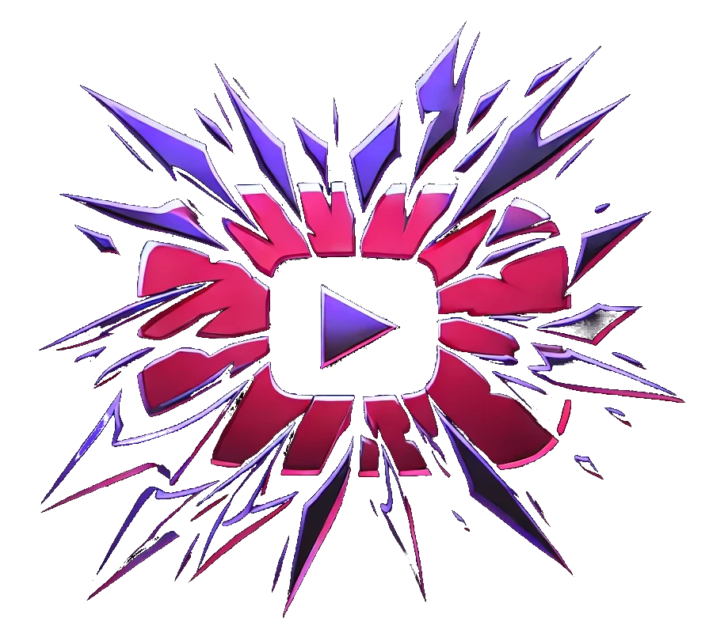

<section>
  <link rel="stylesheet" href="components/intro.css" />
  <div>
    <h1 class="ligne-ola press-start-2p-regular" id="main-title">
      YOUTUBE GAME
    </h1>
    <h2 class="rubik-wet-paint-regular">Who wants to be the King</h2>
  </div>

  

  <div class="buttons">
    <button class="button knewave-regular" onclick="depasse()">
      Je suis dépassé
    </button>
    <button
      id="enter-yt-game"
      class="button knewave-regular"
      onclick="navigate()"
    >
      Pas encore..!
    </button>
  </div>
  <script>
    function depasse() {
      openDrawer();
    }

    function navigate() {
      window.location.href = "https://www.absolute-certainty.fr"; // Remplace par l'URL de la page que tu veux ouvrir
    }

    // Sélectionne chaque lettre de la ligne
    document.addEventListener("DOMContentLoaded", function () {
      const olaLine = document.getElementById("main-title");
      const text = olaLine.textContent;
      olaLine.textContent = ""; // Efface le contenu texte d'origine

      // Crée un <span> pour chaque lettre et ajoute à la ligne
      text.split("").forEach((char, index) => {
        const span = document.createElement("span");
        span.textContent = char;
        olaLine.appendChild(span);

        // Ajoute un délai pour chaque lettre pour créer l'effet de vague
        setInterval(() => {
          setTimeout(() => {
            span.style.transform = "translateY(-10px)";
          }, index * 100); // Décalage progressif pour l'effet de vague

          // Retour à la position d'origine
          setTimeout(() => {
            span.style.transform = "translateY(0)";
          }, index * 100 + 300);
        }, 2000); // Durée totale de la vague avant redémarrage
      });
    });
  </script>
</section>
